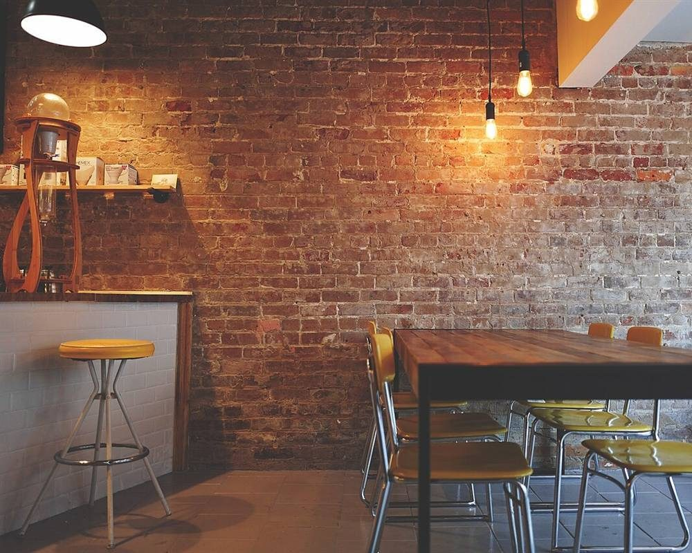
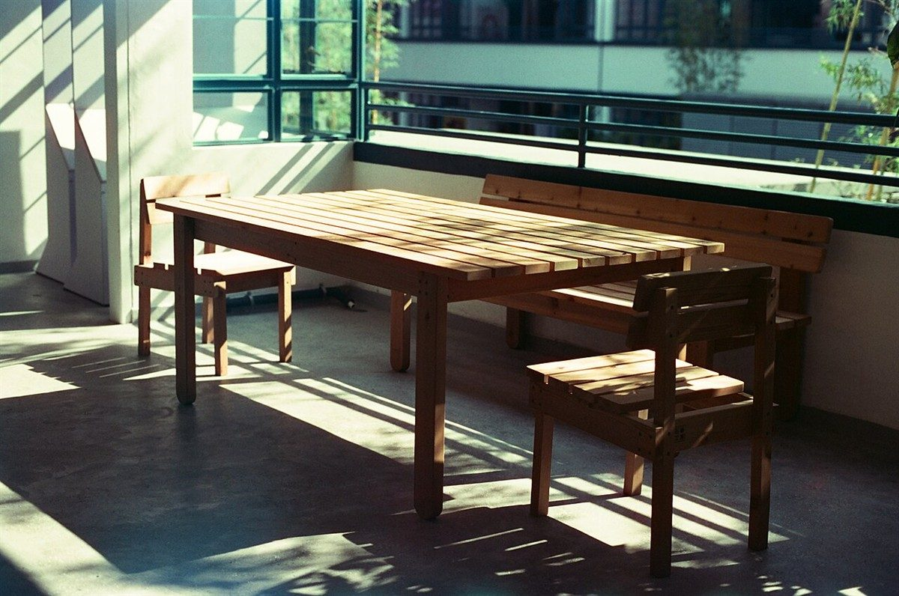

制作側の連想
「THREE」から、三本脚の丸椅子を
店名の由来は分かりません。制作側は「THREE」という言葉から、三本脚の丸椅子を連想しました。三本の脚は、床に多少の凹凸があっても三点で安定して立つといわれます。そこでこのページは、一つの座面に三本の脚、という作りにしています。「制作側の連想」であり、お店の理念・由来とは無関係です。
三本の脚(イメージ)
座る・照らす・ひと息つく。
写真は美星町のものではありません。国外・撮影地不明のフリー素材で、お店の様子を示すものでもありません。
- 脚 1
座る

撮影地不明のイメージ 腰を下ろす場所がある、という想像です。
- 脚 2
照らす

撮影地不明のイメージ 夕方の灯りを思い浮かべた、制作側の連想です。
- 脚 3
ひと息つく

国外のイメージ(ノルウェー付近) 温かい飲み物のイメージで、提供内容ではありません。
ご案内
お店のこと(確認できたものだけ)
| 所在地 | 〒714-1406 岡山県井原市美星町三山378-2 |
|---|---|
| 電話 | なし |
| 営業時間 | 準備中 |
| 定休日 | 準備中 |
| ご予約 | 準備中 |
| 駐車場 | 準備中 |
| SNS | Instagram @port.three |